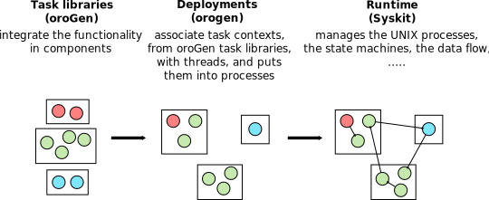

Components
- Component/Library Separation
- Introduction to Components
- Type System
- Creating and Adding Packages to the Workspace
- Development Workflow
- C++ Standard
- Runtime Workflow
Component/Library Separation
We strongly recommend that you develop most of your system's functionality in libraries, instead of doing within the component framework itself. For C++, this means creating C++ library packages that are then later integrated into Rock components to expose that functionality to the system. For Ruby, this means creating Ruby packages that are then used within the Ruby layers (e.g. Syskit)
Why ? Developing libraries is a matter of "general" software engineering best practices. Robotics is a small field, software engineering is not. By doing most of your work in a framework-independent manner, you ensure that you can benefit from the much bigger ecosystem. Moreover, we haven't seen the end of the robotic frameworks. By developing libraries that are framework-independent, you ensure that you can integrate them elsewhere if needs be, cutting the time and effort by a lot.
How does Rock help the library/framework separation ? Supporting this
separation during the development process is a main design driver for the
tooling. For instance, Rock's build system - autoproj - is not assumed to be
present by the rest of the packages. Second, orogen exposes C++ structures
directly into the type system. The widespread approach - using IDLs - usually
end up pushing the developers to integrate code-generated structures in their
libraries thus tying them to the framework itself.
Developing libraries is covered in the libraries section. This section deals with using library-integrated functionality and using them to build data-processing components.
Introduction to Components
Within Rock, components are implemented in C++. They are also specified in a Ruby domain-specific language that is processed by a code generation tool, oroGen. This tool ensures that the component's interface matches its specification. It also removes most of the crude boilerplate-writing code that is the declaration in C++ of the component interfaces.
From a package point of view, components are defined in an orogen package. The
orogen packages are all placed in the /orogen/ subdirectory of one of the
package categories
Important an oroGen package and a library can share the same basename (e.g.
drivers/hokuyo and drivers/orogen/hokuyo). This is even a recommended
behavior when an orogen package is mainly tied to a certain library.
From this page on, the rest of this section will deal with the integration of the functionality from C++ libraries into Rock components by means of orogen. But let's first talk about how to create an orogen package.
Type System
One of the first thing that a system designer has to think about is defining the data structures that will be used to exchange data between the system's parts (in our case, between components, and between the components and Syskit).
These types are used for a few different things
- in the communication between components, and between components and Syskit (ports)
- in the configuration of the component (properties)
- to assess the component's state, i.e. diagnotics and monitoring (ports)
- to provide information about the component's internal state, i.e. debugging (ports)
In Rock, the types are defined in C++, ideally within the libraries but sometimes within the component packages. They are then exported into Rock's type system to allow for their transport (communication between processes), but also for their manipulation in Syskit.
This section will detail how types are defined, how they can be used within oroGen packages, and how they are mapped into the Ruby layers to ease their use on the tooling side.
Creating and Adding Packages to the Workspace
This is covered in the Workspace and Packages section
The workflow of the component scaffolding tool rock-create-orogen is a bit
different, though, so let's go through its workflow. Let's assume we want to
create a planning/orogen/sbpl package, the workflow would be to:
acd
cd planning/orogen/
rock-create-orogen sbpl
cd sbpl
# Edit sbpl.orogen
rock-create-orogen
# Fix potential mistakes and re-run rock-create-orogen until there are no errors
# …
What does rock-create-orogen do ? orogen does "private" code generation
in a .orogen subfolder of the package, and creates a templates/ folder.
rock-create-orogen ensures that the initial repository commit does not
contain any of these. If you don't want to use git, or if you're confident
that you know which files and folder to commit and which to leave out, the second
run is not neeeded.
Once this is done, add the package to your build configuration
Development Workflow
Developing a component involves doing mainly three things:
- defining and importing data types for usage on its interface. The recommended course of action for functionality developed targetting Rock is to make sure that the library package defines C++ types compatible with Rock's type system, and import these types directly. Alternatively, you may define types within the oroGen package and do the conversion between the library and the Rock type system, either manually or automatically using opaque types
- defining the component(s) interface(s) in the orogen file
- implementing the processing parts of the component in C++
Let's remember we strongly recommend that you develop the bulk of your component's functionality in libraries, instead of doing in the components themselves.
Each time data types or the orogen specification are modified, one must run orogen to re-generate code. After code generation, the package behaves like a CMake package.
The best way to build an oroGen package is to use
amake. It takes care of code generation and
building the generated CMake package.
C++ Standard
The C++ standard used to interpret the data type files and to build the component's C++ code is the latest standard that its dependencies require. There is currently no way to explicitely tell orogen to use a different standard. For instance, if your oroGen project uses a library that sets C++11 using the Rock CMake macros, the oroGen project will use C++11 too.
Runtime Workflow
"Developing" a component in C++ within Rock is to write a C++ class that interacts with its inputs/outputs. This class does not specify when the processing is going to be called, and under which OS resource (threads, processes). It is said that the component implementation is separated from the system deployment. The first one is really writing the C++ code that interacts with the component's interface. The second one is part of system integration.
What it means in practice is that a component implement is nothing more than a standalone C++ class. This C++ class can be instantiated multiple times in a single system, using different periods or triggering mechanisms, different threading policies, …
When you define components in oroGen, you create a task library, which is a shared library in which the task context classes are defined. Then, you need to put these libraries in deployments (which is also done by oroGen). Finally, you can start these deployments, connect the tasks together, and monitor them using Syskit.

Next Let's get an overview of type definitions